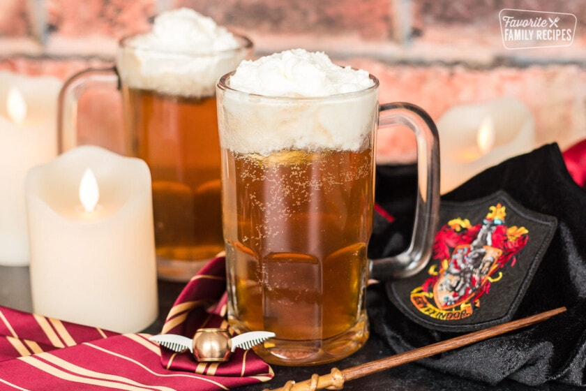

Butter Beer Recipe

How to make homemade Butter Beer
If you've ever watched or read the Harry Potter Series you likely have pondered
what Butter Beer would taste like. The wizarding trio visit the Boar's head many times
and discuss everything from dances. to competitions, to the dark wizard Voldemort.
Thankfully us muggels can conjure up a delicious Butter Beer recipe at home with
only a few ingredients and a little magic!
Ingredients
2 liters chilled cream soda
1/4 teaspoon caramel extract
1/4 teaspoon butter extract
For the cream topping
1 cup heavy whipping cream
1/2 cup butterscotch topping
1/4 cup powdered sugar
Steps
- In large mixing bowl, whip heavy cream until it forms stiff peaks
- Add butterscotch topping and powdered sugar.
- Mix the caramel and butter extracts with the cream soda and then pour
the mixture into clear cups or mugs.
- Top with butterscotch cream topping and enjoy!